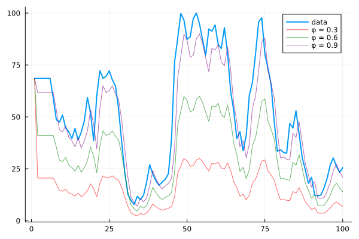
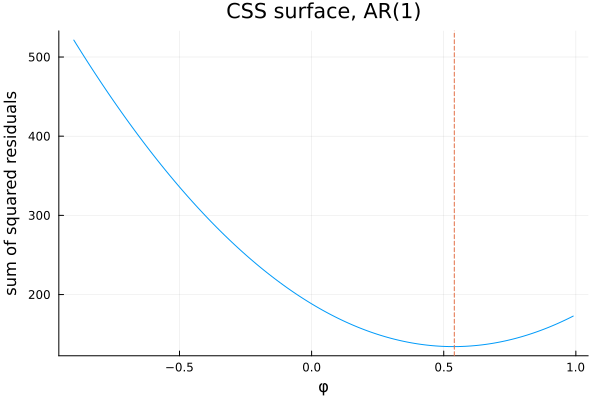
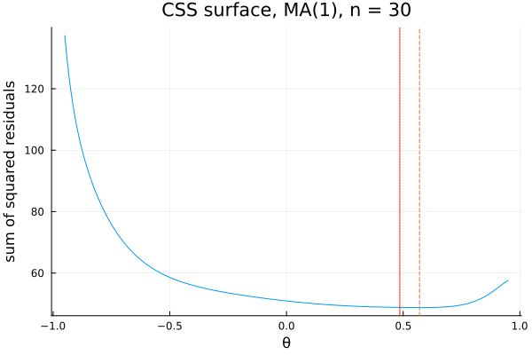
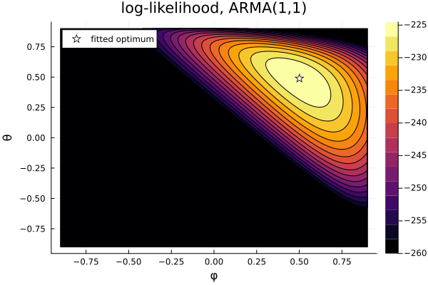
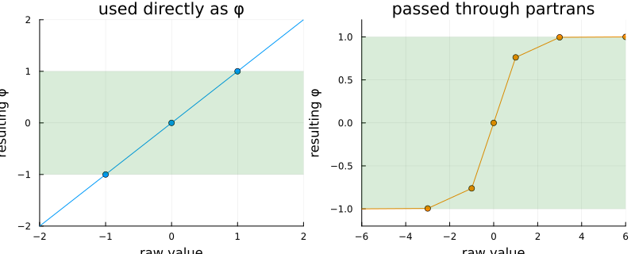

Fitting ARMA
Chapter 17 showed what these processes look like when you already know the answer. Every series there was simulated with φ and θ chosen in advance. This chapter is about getting the answer from data — and it carries a disagreement more unsettling than most, because two respectable pieces of software give the same point estimate and disagree about how much to trust it.
The parameters are unknown
using TSAnalytics, Plots, Random
rec = dataset("rec")
y = rec.value[1:100]
p1 = plot(y; label="data", linewidth=2)
for (phi, c) in [(0.3,:red), (0.6,:green), (0.9,:purple)]
fitted = [y[1]; [phi*y[t-1] for t in 2:length(y)]]
plot!(fitted; label="φ = $phi", color=c, alpha=0.6)
end
p1
Three candidate AR(1) one-step predictions against the real fish recruitment series, φ = 0.3, 0.6, 0.9, none of them fitted — just picked. One of these clearly tracks the sharp swings better than the others, and the eye can rank them roughly. Ranking is not estimating. What is needed is a rule that turns "better" into a number, so a computer can search rather than a human squint.
Least squares, and why it is not enough
The obvious attempt.
Random.seed!(5)
n = 150
y_ar1 = zeros(n)
for t in 2:n
y_ar1[t] = 0.6*y_ar1[t-1] + randn()
end
function css_ar1(phi, y)
s = 0.0
for t in 2:length(y)
s += (y[t] - phi*y[t-1])^2
end
return s
end
phis = -0.9:0.01:0.99
vals = [css_ar1(p, y_ar1) for p in phis]
plot(phis, vals; xlabel="φ", ylabel="sum of squared residuals",
title="CSS surface, AR(1)", legend=false)
vline!([phis[argmin(vals)]]; linestyle=:dash)
A simulated AR(1), φ = 0.6 in truth. The conditional sum-of-squares surface — regress each y_t on y_{t-1} and add up the squared misses — is a clean curve with one minimum, at φ = 0.54 on this particular draw, close to both the truth and to fit_arma's own full-likelihood estimate (0.5332, computed below). For a pure AR model this works and is genuinely how it used to be done, before cheap computing made the alternative affordable — regress the series on its own lag and read off the coefficient.
Random.seed!(4)
n2 = 30
e = randn(n2+1)
y_ma1 = e[2:end] .+ 0.7 .* e[1:end-1]
function css_ma1(theta, y)
n = length(y)
resid = zeros(n)
resid[1] = y[1] # the assumption doing the damage: pre-sample shock forced to zero
for t in 2:n
resid[t] = y[t] - theta*resid[t-1]
end
return sum(abs2, resid)
end
thetas = -0.95:0.005:0.95
vals_ma = [css_ma1(th, y_ma1) for th in thetas]
css_theta = thetas[argmin(vals_ma)]
m_ma1 = fit_arma(y_ma1, (0,1); include_mean=false)
plot(thetas, vals_ma; xlabel="θ", ylabel="sum of squared residuals",
title="CSS surface, MA(1), n = 30", legend=false)
vline!([css_theta]; linestyle=:dash, label="CSS minimum")
vline!([m_ma1.ma[1]]; linestyle=:dot, color=:red, label="full-ML estimate")
println("true θ = 0.7, n = 30")
println("CSS estimate: ", css_theta)
println("full-ML estimate: ", round(m_ma1.ma[1], digits=4), " (se = ", round(m_ma1.se[1], digits=4), ")")true θ = 0.7, n = 30
CSS estimate: 0.57
full-ML estimate: 0.4855 (se = 0.5126)A simulated MA(1), θ = 0.7 in truth, deliberately kept short. The two methods disagree — 0.57 against 0.485 — and the reason is visible in the code, not just the numbers: the CSS recursion has to start somewhere, and the standard trick sets the pre-sample shock e_0 to zero. That is wrong, and it matters most exactly here, on a short series, because a fabricated zero at the start of the recursion propagates through every residual that follows it and there are only thirty of them to dilute the damage. Both estimates carry real uncertainty at this length — the standard error on the full-ML estimate is 0.51, wide enough that neither point estimate is obviously the culprit — but they are not estimating the same thing, and only one of the two is using every observation correctly.
The likelihood
Random.seed!(5)
n3 = 150
e3 = randn(n3+50)
y_arma = zeros(n3+50)
for t in 2:n3+50
y_arma[t] = 0.6*y_arma[t-1] + e3[t] + 0.4*e3[t-1]
end
y_arma = y_arma[51:end]
function ll(phi, theta, y)
ssm = TSAnalytics.build_statespace([phi], [theta])
loglik, = TSAnalytics.kalman_filter(ssm, y)
return loglik
end
phis2 = -0.9:0.02:0.9
thetas2 = -0.9:0.02:0.9
Z = [ll(p, t, y_arma) for t in thetas2, p in phis2]
Z = clamp.(Z, -260, Inf) # a floor purely for a readable contour scale
contour(phis2, thetas2, Z; xlabel="φ", ylabel="θ", title="log-likelihood, ARMA(1,1)", fill=true)
m_arma = fit_arma(y_arma, (1,1); include_mean=false)
scatter!([m_arma.ar[1]], [m_arma.ma[1]]; markersize=6, color=:white, markershape=:star5, label="fitted optimum")
A simulated ARMA(1,1), φ = 0.6, θ = 0.4 in truth. A clear maximum, and the fitted optimum (φ = 0.5006, θ = 0.4889) lands on it — the grid search above and fit_arma's own optimiser agree to four decimals. The contours near the peak are not circular; the surface flattens somewhat along the diagonal running from lower-right to upper-left, where φ and θ trade off against each other and several nearby combinations fit nearly as well. That trade-off is worth noticing on sight, because it is the reason standard errors can be large even when the fit itself looks excellent, and the reason an optimiser started far from the peak can wander before settling.
The likelihood itself is built from one-step-ahead forecast errors and their variances — computed by running the model forward through the data one observation at a time, predicting each value from everything before it, and scoring how far off each prediction was. That is the whole mechanism. What actually performs the running-forward is a piece of machinery this book will name properly in Part VI; for now it is enough to know that it exists and that it is what fit_arma calls once per candidate (φ, θ) to produce the surface above.
Staying inside the region
Chapter 17 drew the stationarity triangle. Search freely in (φ, θ) and the optimiser will eventually try a point outside it, where the likelihood is not even defined for the recursion above.
raw_path = [-6.0, -3.0, -1.0, 0.0, 1.0, 3.0, 6.0]
naive_phi = raw_path # used directly as φ, no transform
transformed_phi = partrans.([[r] for r in raw_path])
transformed_phi = [v[1] for v in transformed_phi]
p1 = plot(; xlims=(-2,2), ylims=(-2,2), title="used directly as φ", xlabel="raw value", ylabel="resulting φ", legend=false)
plot!(p1, raw_path, naive_phi; marker=:circle)
hspan!(p1, [-1,1]; alpha=0.15, color=:green)
p2 = plot(; xlims=(-6,6), ylims=(-1.2,1.2), title="passed through partrans", xlabel="raw value", ylabel="resulting φ", legend=false)
plot!(p2, raw_path, transformed_phi; marker=:circle, color=:darkorange)
hspan!(p2, [-1,1]; alpha=0.15, color=:green)
plot(p1, p2; layout=(1,2), size=(800,320))
The shaded band is the valid region for a single AR coefficient, (-1, 1). Used directly, a raw search value of 3.0 or -6.0 is already outside it — an unconstrained optimiser exploring freely will propose exactly these. Passed through partrans first, every one of the same raw values lands inside the band, and the two extreme points (±6.0) land close to its edges rather than beyond them. This package's partrans is the Monahan (1984) transform: a tanh squash into (-1,1) followed by a Durbin–Levinson-style recursion for orders above one, and it re-parameterises the search so that the entire unconstrained space ℝᵖ maps into the stationary (or, applied to MA coefficients, invertible) region. The optimiser never has to check a constraint or reject a step — every point it can possibly visit is already legal.
partrans is written type-generically rather than pinned to Float64:
new = tanh.(collect(eltype(raw), raw))eltype(raw) rather than a hardcoded Float64 is what makes ForwardDiff.jl able to differentiate straight through this function — ForwardDiff works by passing in a vector of Dual numbers in place of Float64 and needs every operation along the way to accept them. A version of this function that declared its intermediate array as Vector{Float64} would compile, run, and silently truncate every Dual's derivative information the moment it hit that line — a bug that produces a plausible-looking answer with no error message anywhere. fit_arma's own standard errors (below) are obtained by differentiating the likelihood, through this exact transform, via automatic differentiation — so this one line is load-bearing for a feature that appears nowhere near it in the code.
Four answers to one question
Random.seed!(42)
n4 = 200
e4 = randn(n4+50)
y_se = zeros(n4+50)
for t in 2:n4+50
y_se[t] = 0.6*y_se[t-1] + e4[t] + 0.2*e4[t-1]
end
y_se = y_se[50:end]
m_hess = fit_arma(y_se, (1,1); include_mean=false, se_type=:hessian)
m_opg = fit_arma(y_se, (1,1); include_mean=false, se_type=:opg)
println("Julia (hessian): ar=", round(m_hess.ar[1],digits=4), " ma=", round(m_hess.ma[1],digits=4),
" se=(", round(m_hess.se[1],digits=5), ", ", round(m_hess.se[2],digits=5), ")")
println("Julia (opg): ar=", round(m_opg.ar[1],digits=4), " ma=", round(m_opg.ma[1],digits=4),
" se=(", round(m_opg.se[1],digits=5), ", ", round(m_opg.se[2],digits=5), ")")Julia (hessian): ar=0.6324 ma=0.2054 se=(0.07339, 0.08991)
Julia (opg): ar=0.6324 ma=0.2054 se=(0.07637, 0.10012)Fitted here to a series (simulated, φ = 0.6, θ = 0.2, n = 200, seed fixed and reproducible from the code above) run independently through R's arima() and Python's statsmodels ARIMA at the same data:
| method | SE(ar1) | SE(ma1) | implied t (ma1) |
|---|---|---|---|
R arima (Hessian) | 0.07335 | 0.08991 | 2.285 |
Julia se_type=:hessian | 0.07339 | 0.08991 | 2.284 |
Python statsmodels, cov_type="oim" | 0.07378 | 0.09325 | 2.203 |
Python statsmodels, cov_type="opg" (its default) | 0.07755 | 0.10024 | 2.049 |
Julia se_type=:opg | 0.07637 | 0.10012 | 2.052 |
Python statsmodels, cov_type="robust" | 0.07131 | 0.08721 | 2.356 |
The point estimates (ar1 ≈ 0.6324, ma1 ≈ 0.2054) agree across every one of these to four decimal places or better — R, Python and this package all found the same peak of the same likelihood surface. The standard errors do not agree, and the disagreement is not noise: Julia's :hessian mode matches R almost exactly, because both compute the observed-information Hessian of the log-likelihood in the natural (φ, θ) parametrization at the fitted point. Julia's :opg mode lands close to Python's own opg default, because both use the outer product of the per-observation score contributions instead of curvature. Python's oim sits between the two, and its robust sandwich estimator is the tightest of the six here, because it is answering a different question — how much the standard error should widen to stay valid if the model is not quite correctly specified, and on this particular series the answer is "not much".
All three quantities in that table are legitimate estimators of the same asymptotic standard error, and none of them is wrong. The observed-information Hessian is the curvature of the likelihood at its peak — a sharper peak means a more precisely pinned-down estimate. The outer product of gradients estimates the same quantity from a different, cheaper computation involving no second derivatives. The sandwich (robust) estimator combines both and remains asymptotically valid under some forms of misspecification that would invalidate the other two. They differ because their assumptions differ, not because one of the four pieces of software involved made a mistake.
The consequence is concrete rather than academic, even on a series where every method agrees the coefficient is significant. For this fit's MA coefficient, the implied t-statistic ranges from 2.049 under Python's own default to 2.356 under its robust option, with R and both of this package's own modes falling in between — a genuine spread of the kind that, on a smaller sample or a coefficient sitting closer to zero, is exactly wide enough to flip a conclusion. This package defaults to :hessian, matching R; a reader coming from Python and expecting statsmodels' own default answer should pass se_type=:opg explicitly.
Indian quarterly macroeconomic series often run to only sixty or eighty observations. All three covariance estimators above are justified asymptotically, and at n = 80 "asymptotically" is doing real work — the gap between them widens as the sample shrinks, which is the opposite of reassuring for exactly the series where a clear answer matters most. The practical response costs two lines: report which estimator was used, and check whether the significance conclusion survives the alternatives. Almost nobody does the second one.
Where this leaves you
You can fit an ARMA model to a stationary series and you know how much to trust the standard errors that come back — which is less than any single piece of software's confident-looking output implies on its own. Almost no interesting series is stationary to begin with; every real one in this book so far has needed differencing before any of today's machinery could touch it. Chapter 19 puts that requirement back into the model itself, instead of treating it as a chore done beforehand.